To view the complete set of graphs and a detailed analysis of the different trends, open this HTML version of the notebook.
To execute or modify that actual graphs, clone the git repo and open the Jupyter covid.ipynb notebook.
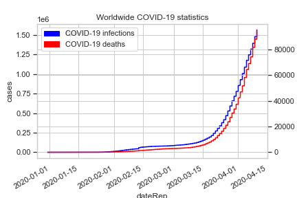
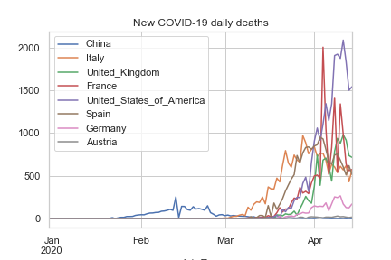
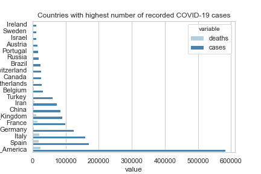

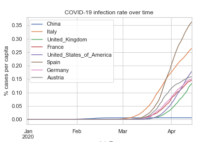
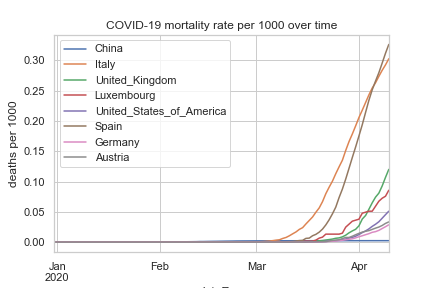
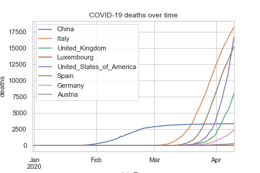

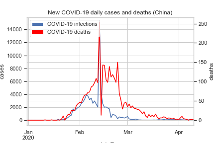
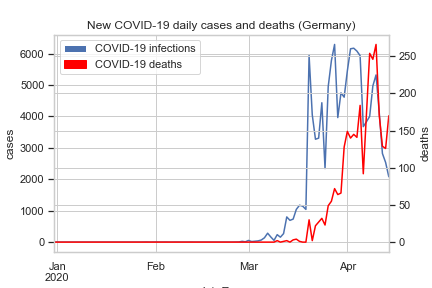
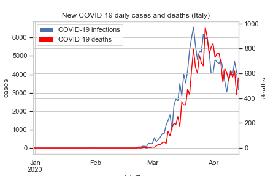
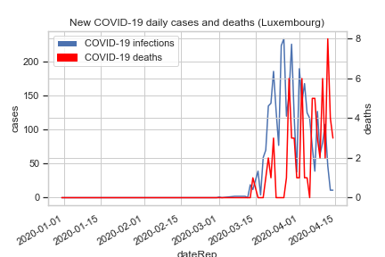
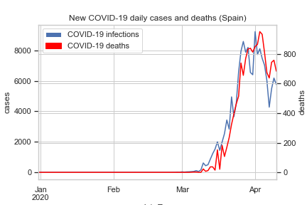
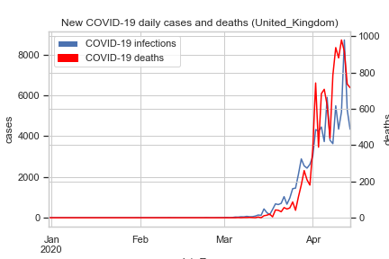
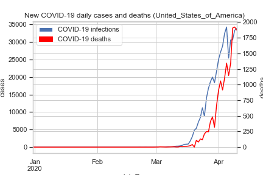